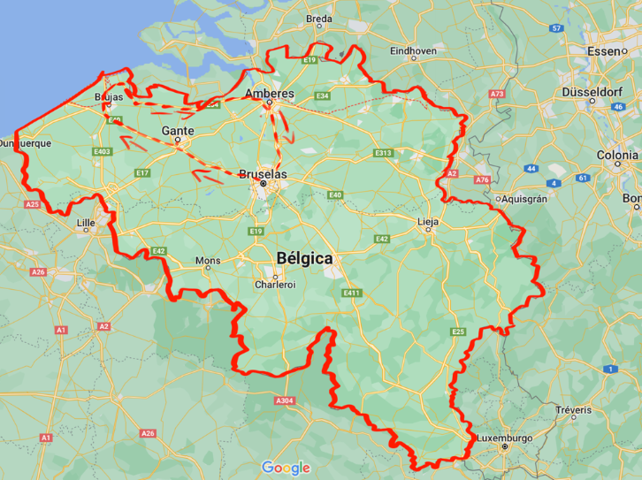
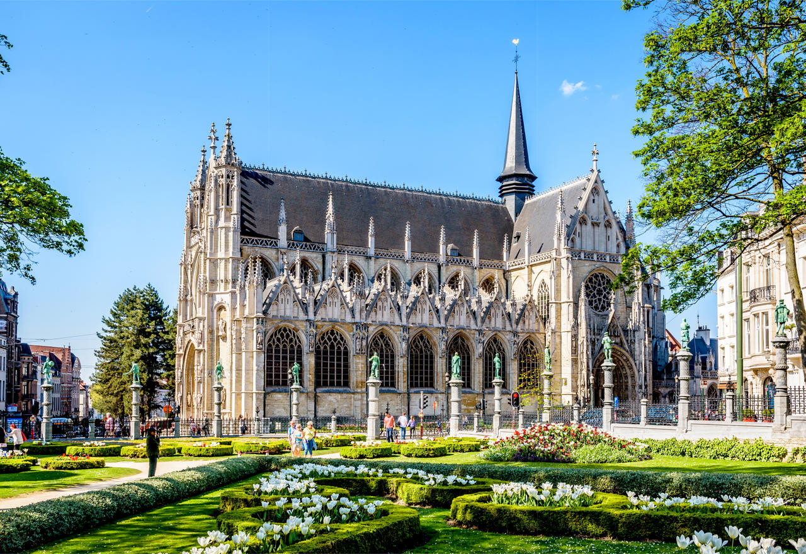

We are going to do a journey throw the beautiful Belgium, we are going to visit 4 cities, first Brussels, Gent, Brugge, and Antwerp.
47,080.68 MXN per person (94,161.96 MXN for a couple)
On the go to Belgium, you will do 2 stepovers, in Dallas and London.
The first plan in economic premium gives you snacks and on the second flight you will eat 2 meals until you get to London, then on the third flight you will just wait until you arrive to the beautiful Belgium.
Then will have our first night in Brussels, Belgium.
The cheapest hotel room costs about 11,500 MXN (for the 5 days) in the Hotel le Plaza, Brussels
We will be tired so we are just going to sleep until the next morning.
You can have breakfast at the hotel or go to coffee shops.
We can recommend coffee shops for breakfast like...
1. Bouche speciality coffee (near park of Brussels)
2. Moka Coffee and pastry’s
3. Café du Sablon
1. The centre of Belgium comic
2. Park of Brussels
3. Palace du grand Sablon
4. Royal Museum of fine arts
5. Plaza La Grand Place
You can move in trains or the subway, but the destinations we choose are near the hotel, you can get there walking.
On the website trainline we can find trains at any hour of the day, so if you want to visit other places in Brussels you can do it, and at the evening go to Gent.
The next train that we’re going to take is from Gent to Brugge, a really popular destiny in Belgium and it will less than 30 min to get there. (Cost $395 MXN for 2 people)
The prices of the hotels are $6000 MXN for 2 persons for a room with a big bed.
And for the last city that we’re going to visit on this journey is Antwerp, this is the largest train that we’re going to take because Brugge is 2 hours away of Antwerp so let’s go. (Cost $800 MXN for 2 people)
We’ll stay in the hotel City box Antwerp, this hotel is ubicated near the Antwerp Zoo the oldest zoo in Belgium, the cost for 2 nights will be about $3140 MXN
And for our last day we will take another train back to Brussels that’s going to last less than 55 min and will cost about $430 MXN.
The going back plane was included in the first flight so...